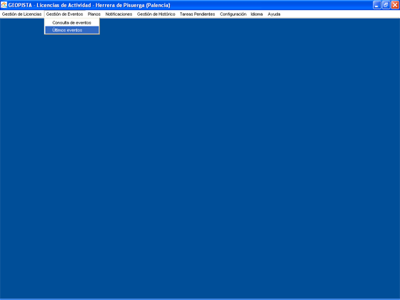

(C)Últimos Eventos
Opción de Menú:

Con esta opción el usuario podrá
consultar
- Los N últimos eventos de cada Expediente del sistema.
- Los N eventos no revisados de los Expedientes existentes en el sistema.
El valor de los N eventos a
mostrar es configurable. Para ello hay que modificar el valor de la variable N_ULTIMOS_EVENTOS
del fichero de configuración de la aplicación.

El formulario se divide en:
Datos de Búsqueda
- Tipo de Licencia de Actividad, Calificada o No Calificada.
- Tipo de Actividad.
- Número de Expediente
- Estado actual del Expediente.
- DNI/CIF del Solicitante. Persona que realiza la solicitud de la Licencia de Actividad.
- Fecha, en la que se produjo el evento.
- Opción Revisados, no Revisados o TODOS. Esta opción es sólo válida para
la búsqueda de los Últimos Eventos, y no de los Eventos pendientes de Revisar.
Si alguno de los campos no se rellena, no se tendrá en cuenta
ese campo en la búsqueda.
Últimos Eventos
Listado con los N últimos eventos de cada expediente
que cumplen los criterios de búsqueda. Para cada evento se muestran los siguientes datos:
- Número de Expediente al que pertenece el evento.
- Tipo de Licencia a la que pertenece, calificada o No Calificada.
- Tipo de Actividad.
- Emplazamiento de la Licencia de Actividad a la que pertenece el evento.
- Estado actual del Expediente.
- Solicitante de la Licencia de Actividad.
- Estado del Expediente en el que se produjo el evento.
- Fecha en la que produjo el evento.
- Revisado. Chequeado si el evento ya ha sido revisado por un usuario.
- Decripción del evento. Detalle del evento.
- Descripción del Evento Seleccionado
Muestra el detalle del evento seleccionado en la tabla anterior,
para mayor comodidad del usuario.
Eventos Pendientes de Revisar
Listado con los N eventos de cada expediente
del sistema que cumplen los criterios de búsqueda y que no han sido revisados por el usuario. Para cada evento se
muestran los siguientes datos:
- Número de Expediente al que pertenece el evento.
- Tipo de Licencia a la que pertenece, Calificada o No Calificada.
- Tipo de Actividad.
- Emplazamiento de la Licencia de Actividad a la que pertenece el evento.
- Estado actual del Expediente.
- Solicitante de la Licencia de Actividad.
- Estado del Expediente en el que se produjo el evento.
- Fecha en la que produjo el evento.
- Revisado. Debe de aparecer como no Chequeado, ya que son eventos que aún no han sido revisados.
- Decripción del evento. Detalle del evento.
- Descripción del Evento Seleccionado
Muestra el detalle del evento seleccionado en la tabla anterior,
para mayor comodidad del usuario.
Botón Ir a Expediente
Abre la opción de menú de Modificación de Licencias de Actividad, para el Expediente seleccionado.
Botón Salir
Cierra el formulario de Consulta de los Últimos Eventos.